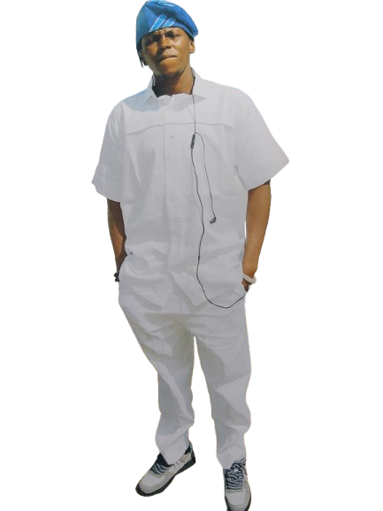

Founder, graphic designer, and builder of spaces for people who were told to shrink. Every link below is real, built alone, over years — this is the whole picture, not a highlight reel.

Explore Mazien Eseh O. Archie through a visual presentation of AI photography.
Years of AI-generated images that turned out to be quiet prophecy — early versions of a future self that's since become real. Built to show that AI, used with good intention, is just another tool for good.
What if you met the mind before you met the person? A glimpse into an ADHD mind — the way it sees, feels, connects, creates, questions, and experiences the world. No name to shape your first impression. No label to tell you what to think. Just a person, seen from the inside.
This isn't a philosophy performed for anyone. It's how I actually live. I don't believe in classes, in people being worth less than others, in diversity being something to correct rather than witness. Everything on this page was built without income, without much support, because the passion never needed permission to keep going. If something here moves you, I'm glad. If it doesn't, that was never in my hands to control — only to offer, honestly, exactly as it is.